不打不相识，是最好的入场券
情境：随元青初到清风寨，与十三娘拳脚切磋，从对手打成盟友。
遇到这种情况，可以这样做
- 想被一个圈子接纳，先亮出让人服气的本事。
- 单手应战的自信，比十句好话更管用。
- 真正的尊重，常常是打出来的。

Drama Recap · 剧情图文总结
第 18 集 · 屠城之夜
长信王世子随元青率清风寨山匪血洗林安镇，只为逼出武安侯谢征的妻子樊长玉；为护地窖里的乡亲，长玉孤身引匪、后院挟持世子、假意周旋，最终在悬崖上冷笑坠崖；谢征率一百血衣骑赶到，血洗清风寨，靠海东青指引才在悬崖藤蔓下寻回浑身冰冷的她
林安镇的血，从夜里流到天亮。长信王世子随元青被谢征一箭射落山崖，坠江后为清风寨十三娘所救；伤一好，他就带着收编的山匪扑回林安，屠城一夜，只为逼出武安侯的女人樊长玉。长玉为护住地窖里的乡亲与妹妹，孤身引匪、后院挟持世子、假意周旋，最终在悬崖上冷笑坠崖。谢征率一百血衣骑赶到，血洗清风寨，却靠一只海东青，才在悬崖藤蔓下寻回浑身冰冷的她。
第 18 集，屠城之夜。 随元青在清风寨养伤醒来，与寨主十三娘拳脚切磋，不打不相识。长信王长子齐旻（实为前朝皇孙）赶来探望，兄弟二人密谋：收编清风寨山匪，趁卢城战事吃紧，把林安周边的百姓屠杀干净，让武安侯尽失民心。临别前，齐旻救下危难的十三娘母女，又用马车掳走了认出他的俞浅浅母子。
剧里的鸡毛蒜皮，往往是人生的缩影。这些情节不只是故事——当你在现实中遇到同样的处境时，它们能提醒你：先做什么、别做什么、怎么说才有效。
情境：随元青初到清风寨，与十三娘拳脚切磋，从对手打成盟友。
情境：崔千金父母惨死，宁死不吐长玉下落，随元青只能「成全」她。
情境：宋母为保命出卖长玉住址，仍被随元青一枪刺死。
情境：长玉被围，制服世子作人质，与齐旻合演人质戏骗过山匪，纵马突围。
情境：康婆子把孙子小虎和长宁藏进床底，自己骂着山匪引开刀口，被割喉殉难。
情境：魏胜代魏严试探，谢征故意装作不知瑾州惨案的证据，麻痹对方。
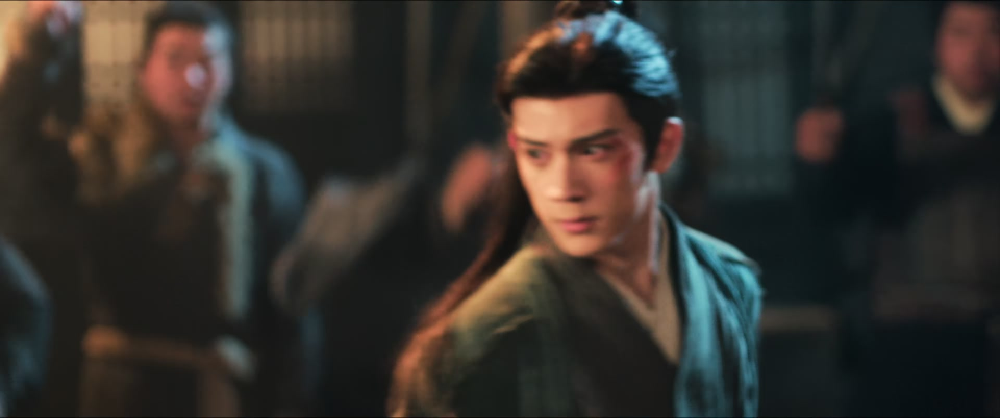
长信王世子随元青被谢征一箭射落山崖、坠入江中，为清风寨十三娘所救，背回寨里养伤。他这一醒，山匪围着起哄要喝酒。十三娘是这寨子的老大，三拳两脚把一群臭男人收拾得服服帖帖：「还有谁想上来，给姑奶奶我挠挠痒？」
随元青看不下去，单手应战：「我从来不欺负女人，我让你一只手。」十三娘怕他手伤未愈，山匪也在旁劝：「我们十三娘可不好惹，别为了出个风头，连命都不要了。」拳来脚往间，两人反倒打出了几分相惜——这一寨子的刀口，从此认了他这个新主人。
关键台词 · KEY QUOTES
混战中，一辆马车冲进人堆，救下被困的十三娘母女。「我们主子要见你。」马车里出来的人，让十三娘愣住——「齐公子，是你！」齐旻一身锦绣，含笑应道：「是啊。这天下除了我，还有谁会对你这么好，敢在屠城前来救你？」
十三娘是个爽利人，当场就要以身相许：「恩人在上，小女谢过你的救命之恩。不必后报，当下以身相许就行！」齐旻却只是笑。众人才发现，他那张烧伤毁容的脸，竟已痊愈——「这张脸好看吗？不就靠着这张脸，我才能来见你。」
关键台词 · KEY QUOTES
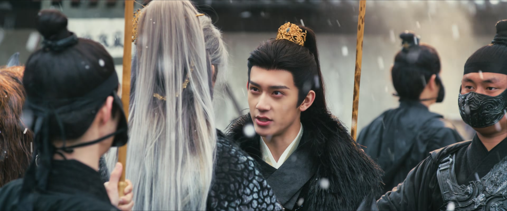
齐旻与随元青兄弟相见。随元青在清风寨蛰伏已久，齐旻本要去卢城，听闻亲弟落江失踪，心急如焚，先赶来寻他。兄弟俩席地而坐：「大哥，你先去霸下等我，到时候我们同去卢城。就算父王发火，弟弟也能跟你扛过去。」
随元青另有所谋：「我花重金收编了整个清风寨的山匪，先给武安侯送上一份大礼。既然他们都以卢城为重，我偏要把这周边的百姓屠杀干净，让他尽失民心。」「都说武安侯算无遗策，说不定这次，我就找到他的软肋了。」兄弟二人相视而笑——这天下，注定是哥俩的。
关键台词 · KEY QUOTES
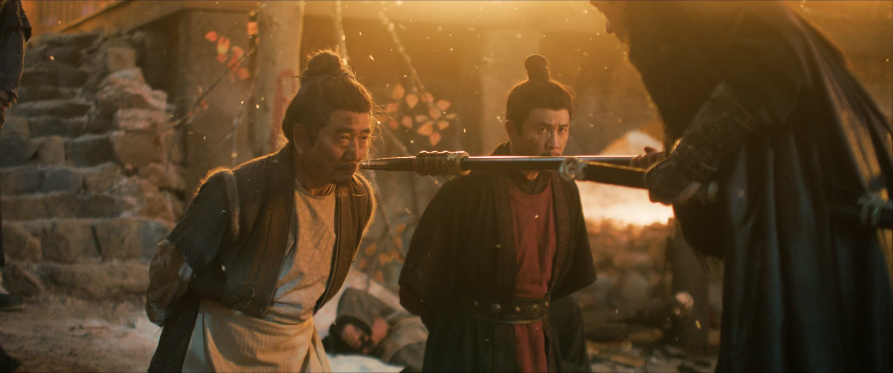
随元青带着收编的山匪扑进林安镇，从夜里杀到天亮。他把认识长玉的人一个个抓到面前：「都说你们认识那杀猪娘子。告诉我她叫什么、人在何处，说了就能活命。」里长、李大厨、王捕头先后倒在刀下。崔千金宁死不屈：「你姑奶奶我不知道！你杀了我爹、杀了我娘，我自己活着有什么意思！」随元青成全了她。
屠城乱起时，俞浅浅带着儿子宝儿还困在城里。齐旻的马车冲进来把她母子救走——可认出齐旻的那一刻，俞浅浅浑身发冷：她从一个地狱，落进了另一个地狱。
轮到宋砚的母亲。她跪在地上指路：「大人，你说的那个杀猪的娘子，她叫樊长玉，我知道她家在哪儿，这就带你们过去。她还在后院养着猪呢。」可随元青平生最恨背信弃义之人——连自己人都出卖的，他转头就一枪刺死了她：「我平生最恨这种不义之人，连自己人都出卖。就这么死了，是便宜她了。」
关键台词 · KEY QUOTES
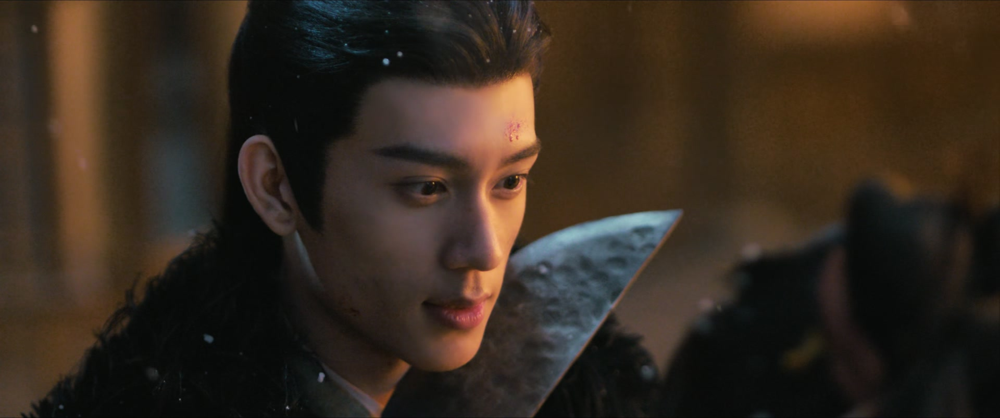
随元青搜到樊家，收了那幅谢征与长玉姐妹俩的画像，又发现后院地窖里藏着人。为护住赵大娘、长宁和满窖乡亲，长玉不得不现身，在樊家后院与随元青搏命。凭着杀猪练出的一身刀法，她竟把世子制服，当成了人质。
山匪投鼠忌器，围而不攻。齐旻闻讯赶来，张口就是一句：「你这女人，怎么这么无情？我来寻你，你倒是要我的命。」长玉冷笑：「我要是死在这儿，你和寨下的人也无望逃得出去。你放了我，我就放过你和寨下的人。」
随元青在旁阴恻恻地开口：「怎么，还不敢承认你是他的女人？」长玉回敬：「我崇拜武安侯，想做他的女人，跟你又有什么关系？」齐旻顺势接戏：「你拿我做人质，我当然要装着像一点了。要不怎么救你出去，怎么帮你瞒着那寨下的人？」
关键台词 · KEY QUOTES
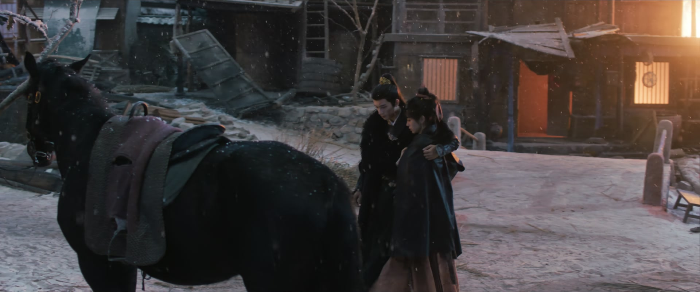
二当家带着人追上拦路：「你想将这女人带回清风寨？你若想娶十三娘，就将这女人杀了！」齐旻反唇相讥：「二当家娶了四房压寨夫人，强占的民女更是不计其数。都是男人，为何单单要求于我？」二当家被噎住，撂下一句「等我回寨，自有分数」，拂袖而去。
长玉脱身之后，迷晕随元青，翻身上马把追兵往镇外引。城门口满目尸首，崔县令被吊在城楼之上。追来的二当家被她以命相搏反杀当场，几个山匪也一并了账。同一时刻，康婆子听见山匪砸门，把孙子小虎和长宁塞进床底，自己挡在门口——「别出声，再等等啊，一会儿奶奶给你热姜汤喝。」
关键台词 · KEY QUOTES
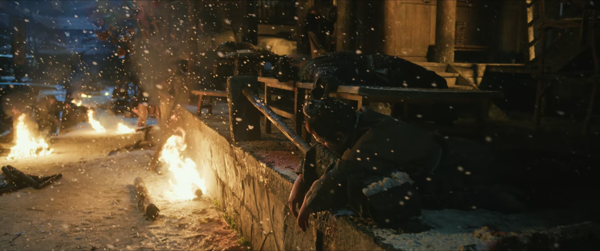
屠城之夜漫长得没有尽头。樊家地窖里，乡亲们屏着呼吸数更漏，谁也不敢出声。长宁身有旧疾，在地窖里待不住，被人偷偷藏到了更安全的地方——可这一藏，就把她和姐姐隔成了两路。
暗夜里，孩子细细的「阿姐」声与老人们压着嗓子的「别动」「站好」交织在一起。直到天边泛白，幸存者才敢从地窖和暗角里探出头，在废墟间寻找失散的亲人——长玉下落不明，长宁也不见了踪影。
关键台词 · KEY QUOTES
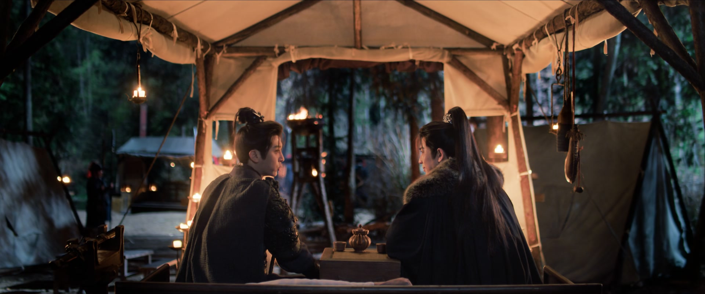
谢征伤愈复出，魏严的心腹魏胜寻了过来：「听说你阵前遇险，相爷虽不言语，却忧心忡忡。如今得知你伤愈脱险，特命我来看望师弟。不曾想，半道便遇上了。」谢征面色如常，寒暄应对。
魏胜试探卢城军务，又旁敲侧击地问起当年旧案。谢征滴水不漏——瑾州惨案的证据，他明明攥在手里，此刻却装作一无所知，好让魏严放松警惕。「我这伤势未愈，卢城那边自有贺敬元将军照应。现下，也只能先保住手下的将士安然无恙，才有余力去报仇雪耻。」
关键台词 · KEY QUOTES
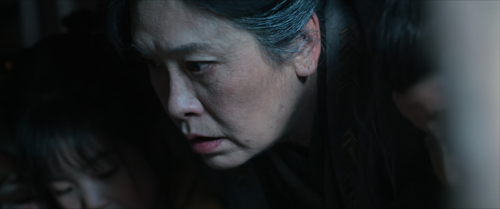
侯营中，海东青带着血与伤从林安飞回，一头栽在谢征面前。「侯爷，海东青是从林安飞回来的！」谢征脸色骤变——他当即点一百血衣骑：「随我去林安！」
与此同时，林安的暗屋里，幸存的大人把孩子们拢在身边。灶台上盖着一盆饺子，大人只许每个人尝几个：「吃多了，肚子会痛。」又指着院里的鸡：「鸡下的蛋，别都吃完了。只要有蛋，就能孵小鸡。」——在屠城的夜里，这点烟火气，是活人留给孩子们的念想。「天亮之前，千万别出去。」
关键台词 · KEY QUOTES
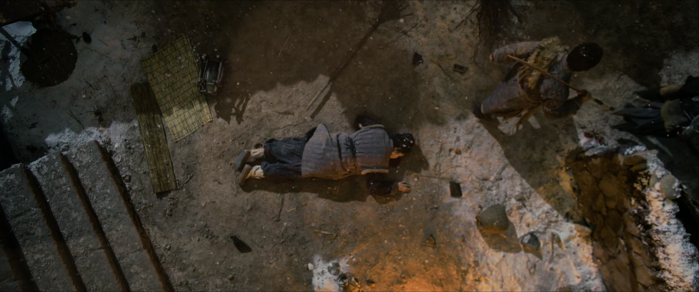
山匪挨户搜查活口，搜到康婆子家。她早已把小虎和长宁藏好，自己迎出门去，指着鼻子骂：「我老婆子一个人，无儿无女，我不怕你们！你们这帮有娘生没娘养的！」骂声未落，一刀割喉——她倒下了，床底的两个孩子，活了下来。
同一夜，长玉被随元青一路追到悬崖边。「小娘子，无路可逃了吧？投降吧。我比武安侯强多了，跟着我，也给你留条小命。退一步，就是死无葬身之地。」长玉退到崖边，忽然冷笑——她没有退，反而纵身一跃，坠入深渊。山匪只来得及急报：「世子，我们的寨子被屠了！寨子里逃出来的人说，是武安侯的血衣骑，一百号人呢！」
关键台词 · KEY QUOTES
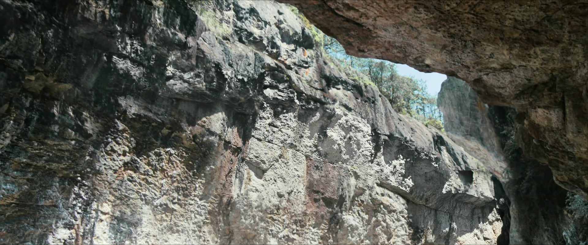
「我当是谁呢。一百血衣骑，拿下一座城池都不在话下，何况小小的清风寨。」随元青冷笑，可寨子已经没了，他也知道来者是谁。谢征的血衣骑把清风寨屠了个干净，又把山匪的尸首挂上城楼，示众三日。
谢征在废墟与寨子之间翻了个遍。「侯爷，寨子都搜遍了，没有发现樊娘子。林安镇也被屠了，救了一些人，但没有樊娘子。到处都找遍了，也没有樊娘子和长宁的踪迹。」谢征攥紧缰绳——长玉不在镇上，那就是在那条坠落的路上。
关键台词 · KEY QUOTES
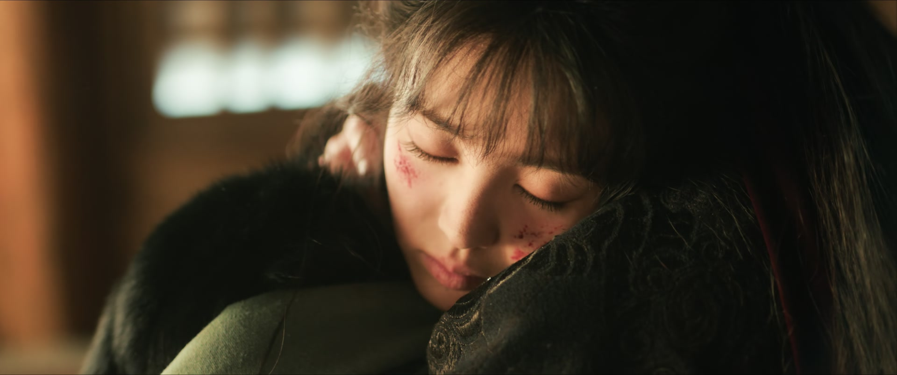
谢征没有放弃。海东青在头顶盘旋，引着他往悬崖下去——藤蔓交错间，挂着一个人。谢征把人抱下来，声音都在发抖：「你怎么不是我认识的樊长玉，那个永远都红扑扑的人，怎么现在身子却是冷冰冰的。」
林中木屋，隐居的瞎老婆子替长玉把了脉：「这是寒邪入体了，脉象微弱。得给她刮痧活血、疏通经脉，把体内的寒邪散了。只可惜呀，我儿子儿媳去城里卖药了，我又是个瞎老婆子。你们中可有女眷，能帮着刮痧？」无人应声。谢征上前一步：「我可以。」——以夫婿之名，他亲手为长玉刮痧祛寒，守了一夜，不肯合眼。
关键台词 · KEY QUOTES
为护地窖里的赵大娘、长宁与乡亲孤身现身，凭杀猪刀法制服世子当人质，假意周旋后迷晕随元青纵马突围；城门口反杀二当家，最终在悬崖上冷笑坠崖。
伤愈复出，与魏胜虚与委蛇装作不知旧案；接海东青急报，点一百血衣骑血洗清风寨，靠海东青指引在悬崖藤蔓下寻回长玉，以夫婿之名亲手为她刮痧祛寒，守了一夜。
被谢征射落山崖后为十三娘所救，收编清风寨山匪；率众血洗林安屠城，拷问百姓逼问长玉下落，最恨背信弃义之人，宋母告密仍被他一枪刺死；悬崖逼降长玉不成。
烧伤毁容的脸已然痊愈，救下十三娘母女、又强行掳走俞浅浅母子；与随元青兄弟相谋，欲借屠城打击武安侯民心；配合长玉演人质戏助她脱身。
救下坠江的随元青，与之拳脚切磋、不打不相识；曾受齐旻搭救，当场欲以身相许；兄长二当家死于长玉之手，为日后寻仇埋下伏笔。
身有旧疾，屠城之夜被康婆子藏在床下护住；与姐姐失散后下落不明，成了长玉此后寻妹之路的起点。
把孙子小虎和樊长宁藏进床底，自己骂着山匪引开刀口，被一刀割喉殉难——以最平凡的命，护住了两个孩子的命。
随元青单手迎战十三娘，从刀口上打出来的另类相惜——两个桀骜的人，从此结下了一段说不清的情分。
随元青一夜之间把林安变成坟场，拷问「杀猪娘子」的下落；崔千金宁死不屈、宋母告密反被诛，「最恨背信弃义之人」的歪理在血里格外瘆人。
长玉制服世子当人质，与齐旻当着山匪的面合演亲密戏——「我崇拜武安侯，想做他的女人」，一句话把刀口上的惊险都藏进了戏里。
把孙子和长宁藏进床底，自己骂着山匪迎上刀口。「一会儿奶奶给你热姜汤喝」的热乎话，和那一刀割喉，是这集最戳心的一冷一热。
「退一步，死无葬身之地」——随元青步步逼近，长玉却冷笑一声纵身跃下，用最烈的姿态替自己挣一条生路。
海东青引路，谢征在悬崖藤蔓下寻回浑身冰冷的长玉；以夫婿之名，他亲手为她刮痧祛寒，守了一夜不肯合眼——「你怎么不是我认识的樊长玉」。
康婆子用命护住了她，可屠城之后长宁却不见了踪影——她会被谁掳走？下一集，十三娘将把她当成牵制谢征的重要筹码。
俞浅浅认出齐旻后只剩恐惧，而齐旻早已摸清她的软肋俞宝儿——她从此被齐旻牢牢拿捏。
面对魏胜的试探，谢征故意示弱，好让魏严放松警惕——他手里究竟攥着多少瑾州惨案的证据？这局棋才刚刚开始。
二当家追杀长玉反被反杀，十三娘痛失兄长——这份血仇很快会找上门，也让十三娘与随元青结成危险的合作。
他说他找到了武安侯的软肋，那便是樊长玉——长玉坠崖生死未卜，谢征从此多了软肋，也多了要为软肋讨的债。